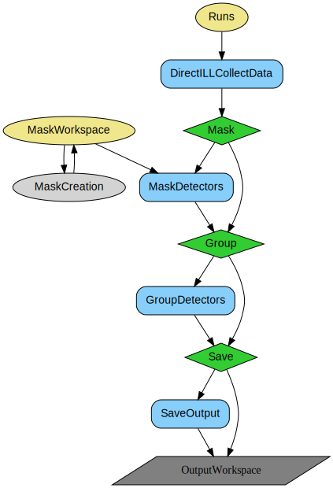
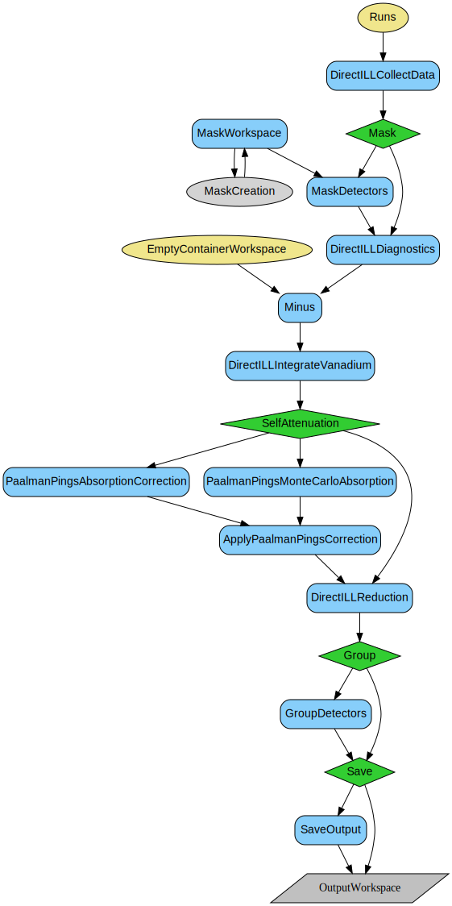
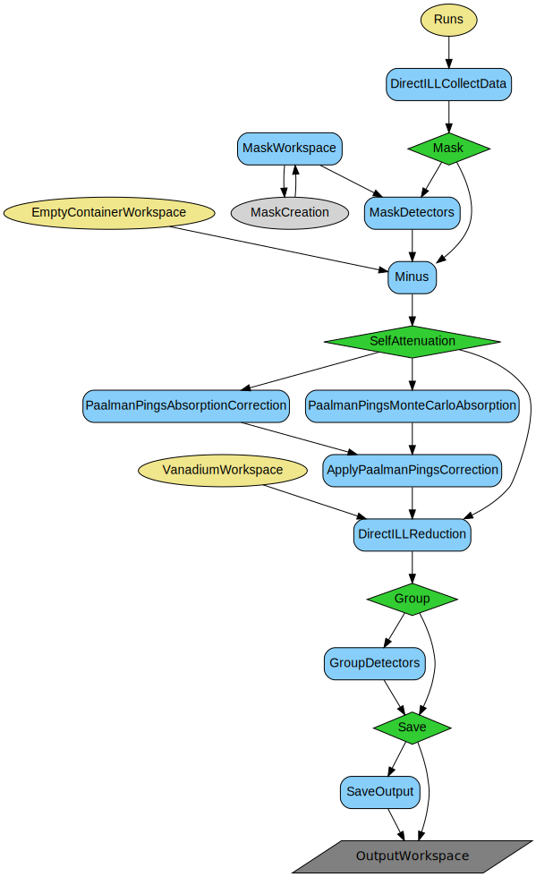
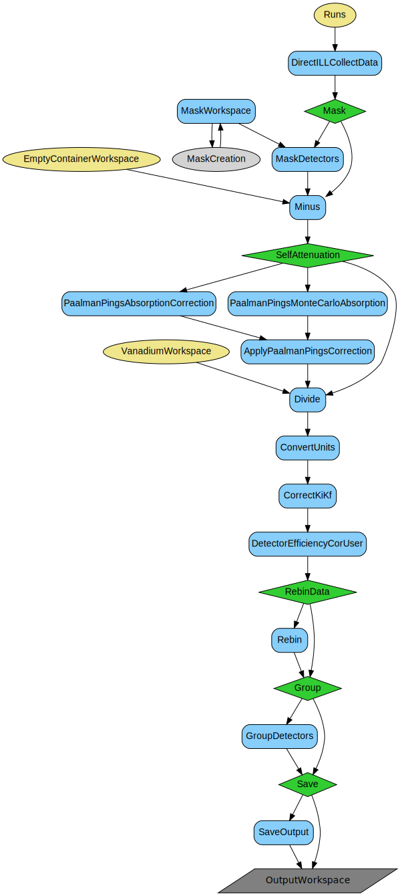

\(\renewcommand\AA{\unicode{x212B}}\)
DirectILLAutoProcess v1¶
{kind=link}
DirectILLAutoProcess dialog.¶
Summary¶
Performs automatic data reduction for the direct geometry TOF spectrometers at ILL.
See Also¶
Properties¶
Name |
Direction |
Type |
Default |
Description |
|---|---|---|---|---|
OutputWorkspace |
Output |
WorkspaceGroup |
Mandatory |
The output workspace group containing reduced data. |
Runs |
Input |
list of str lists |
Mandatory |
Run(s) to be processed. Allowed values: [‘nxs’] |
ProcessAs |
Input |
string |
Sample |
Choose the process type. Allowed values: [‘Cadmium’, ‘Empty’, ‘Vanadium’, ‘Sample’] |
ReductionType |
Input |
string |
Powder |
Choose the appropriate reduction type for the data to process. Allowed values: [‘Powder’, ‘SingleCrystal’] |
VanadiumWorkspace |
Input |
string |
File(s) or workspaces containing vanadium data. |
|
EmptyContainerWorkspace |
Input |
string |
Empty container workspace. |
|
EmptyContainerScaling |
Input |
number |
1 |
Scaling factor for the empty container. |
CadmiumWorkspace |
Input |
WorkspaceGroup |
Cadmium absorber workspace. |
|
FlatBkg |
Input |
string |
Flat Bkg AUTO |
Control flat background subtraction. Allowed values: [‘Flat Bkg AUTO’, ‘Flat Bkg ON’, ‘Flat Bkg OFF’] |
FlatBkgAveragingWindow |
Input |
number |
30 |
Running average window width (in bins) for flat background. |
FlatBackgroundSource |
Input |
string |
File(s) or workspaces containing the source to calculate flat background. |
|
FlatBkgScaling |
Input |
number |
1 |
Flat background multiplication factor. |
OutputFlatBkgWorkspace |
Output |
Output workspace for flat background. |
||
AbsoluteUnitsNormalisation |
Input |
string |
Absolute Units OFF |
Enable or disable normalisation to absolute units. Allowed values: [‘Absolute Units OFF’, ‘Absolute Units ON’] |
Normalisation |
Input |
string |
Normalisation Monitor |
Normalisation method. Allowed values: [‘Normalisation Monitor’, ‘Normalisation Time’, ‘Normalisation OFF’] |
MonitorPeakWidthInSigmas |
Input |
number |
7 |
Width of the monitor peak in multiples of ‘Sigma’ in monitor’s EPP table. |
IncidentEnergyCalibration |
Input |
string |
Energy Calibration AUTO |
Control the incident energy calibration. Allowed values: [‘Energy Calibration AUTO’, ‘Energy Calibration ON’, ‘Energy Calibration OFF’] |
IncidentEnergy |
Input |
number |
0 |
Value for the calibrated incident energy (meV). |
ElasticChannel |
Input |
string |
Elastic Channel AUTO |
How to acquire the nominal elastic channel. Allowed values: [‘Elastic Channel AUTO’, ‘Default Elastic Channel’, ‘Fit Elastic Channel’] |
EPPCreationMethod |
Input |
string |
EPP Method AUTO |
Method to create the EPP table for detectors (monitor is awlays fitted). Allowed values: [‘EPP Method AUTO’, ‘Fit EPP’, ‘Calculate EPP’] |
ElasticChannelIndex |
Input |
number |
0 |
Bin index value for the centre of the elastic peak. Can be a float. |
SampleAngleOffset |
Input |
number |
0 |
Value for the offset parameter in omega scan (degrees). |
MaskWorkspace |
Input |
string |
File(s) or workspaces containing the mask. |
|
MaskedTubes |
Input |
long list |
List of tubes to be masked. |
|
MaskThresholdMin |
Input |
number |
0 |
Threshold level below which bins will be masked to remove empty / background pixels. |
MaskThresholdMax |
Input |
number |
0 |
Threshold level above which bins will be masked to remove noisy pixels. |
MaskedAngles |
Input |
dbl list |
Mask detectors in the given angular range. |
|
MaskWithVanadium |
Input |
boolean |
True |
Whether to mask using vanadium diagnostics workspace. |
EnergyRebinning |
Input |
string |
Energy rebinning when mixing manual and automatic binning parameters. |
|
EnergyRebinningParams |
Input |
dbl list |
Manual energy rebinning parameters. |
|
MomentumTransferBinning |
Input |
dbl list |
Momentum transfer binning parameters. |
|
AbsorptionCorrection |
Input |
string |
None |
Choice of approach to absorption correction. Allowed values: [‘None’, ‘Fast’, ‘Full’] |
SelfAttenuationMethod |
Input |
string |
MonteCarlo |
Choice of calculation method for the attenuation calculation. Allowed values: [‘Numerical’, ‘MonteCarlo’] |
SampleMaterial |
Input |
Dictionary |
Sample material definitions. |
|
SampleGeometry |
Input |
Dictionary |
Dictionary for the sample geometry. |
|
ContainerMaterial |
Input |
Dictionary |
Container material definitions. |
|
ContainerGeometry |
Input |
Dictionary |
Dictionary for the container geometry. |
|
DetectorGrouping |
Input |
string |
Grouping pattern to reduce the granularity of the output. |
|
GroupDetBy |
Input |
number |
1 |
Step to use when grouping detectors to reduce the granularity of the output. |
GroupDetHorizontallyBy |
Input |
number |
1 |
Step to use when grouping detectors horizontally (between tubes) to increase the statistics for flat background calculation. |
GroupDetVerticallyBy |
Input |
number |
1 |
Step to use when grouping detectors vertically (inside the same tube) to increase the statistics for flat background calculation. |
ApplyGroupingBy |
Input |
boolean |
False |
Whether to apply the pixel grouping horizontally or vertically to the data, and not only to increase the statistics of the flat background calculation. |
GroupingAngleStep |
Input |
number |
0 |
A scattering angle step to which to group detectors, in degrees. |
GroupingBehaviour |
Input |
string |
Sum |
Defines which behaviour should be used when grouping pixels. Allowed values: [‘Sum’, ‘Average’] |
SaveOutput |
Input |
boolean |
True |
Whether to save the output directly after processing. |
ClearCache |
Input |
boolean |
False |
Whether to clear intermediate workspaces. |
Description¶
This algorithms performs full treatment of ILL’s time-of-flight data recorded with the ILL instruments IN4, IN5, IN6, PANTHER, and SHARP. This high level algorithm steers the reduction for each sample type and performs the full set of corrections for a given sample run, or set thereof; measured at one initial energy and one or more temperatures (for powder) and one or more sample angles (for single crystal).
The sample measurement will be corrected for all the effects the user selects and the input is provided for, such as flat background, empty container subtraction, and vanadium normalisation. The output is transformated to \(S(q,\omega)\) space, and \(S(2\theta,\omega)\), and can be stored as .nxs and .nxspe files, if requested.
The algorithm is intended to be run multiple times, for each of the available processes (Cadmium, Empty, Vanadium, Sample) and each change of initial energy, and sample geometry and material. Multiple temperatures can be reduced together.
After each execution, a report is printed at the notice level. It contains the numor that was reduced, or the first and last in case of a list, which input workspaces (from Cadmium, Empty, Vanadium, MaskWorkspace) were used, if any, the incident energy, and the sample temperature(s).
ProcessAs¶
Different input properties can be specified depending on the value of ProcessAs, as summarized in the table:
ProcessAs |
Input Workspace Properties |
Other Input Properties |
|---|---|---|
Cadmium |
||
Empty |
|
|
Vanadium |
|
|
Sample |
|
|
All the input workspace properties above are optional, unless bolded. For example, if processing as sample, if an empty container and cadmium absorber inputs are specified, subtraction of these workspaces will be performed, while if not, this step will be skipped.
On top of the input properties, there are also switches that control the workflow and which corrections are to be performed. For example, the sample is going to be normalised to absolute units with vanadium if AbsoluteUnitsNormalisation is set to “Absolute Units ON”. There is also a number of parameters that allow creating bespoke masking, these include:
MaskWorkspace - custom mask workspace
MaskedTubes - list of tubes to be masked
MaskThresholdMin, MaskThresholdMax - minimum and maximum threshold values of normalised counts to be masked
MaskedAngles - range of 2theta angles to be masked
MaskWithVanadium - whether to use Vanadium-derived diagnostics to mask data
ReductionType¶
There are two supported reduction types available: Powder and SingleCrystal. The choice impacts the reduction workflow of the Sample process, as can be seen in the diagrams below. The SingleCrystal reduction exits the reduction earlier and saves the output to be processed externally to Mantid, while Powder continues to the call to DirectILLReduction, and then saves its output.
Caching with ADS¶
This algorithm cleans-up the intermediate workspaces after execution if ClearCache property is checked (True by default). It is recommended to keep it checked due to large memory consumption coming from keeping rawdata.
Default naming schemes are imposed to ensure smooth communication of workspace contents. While user can specify the name for the output WorkspaceGroup, the names of contents will consist of the name of the group as a prefix, the numor of the rawdata (or first rawdata in case of merging), initial energy, and temperature (when ReductionType is Powder).
Saving output¶
When SaveOutput property is checked, the output workspaces are saved in the default save directory. Depending on the ReductionType, and contents of the workspace saved, the output is either a .nxs or a .nxspe file. For SingleCrystal reduction type, the output of the rebinning is saved as .nxspe files with the Psi parameter coming from a sum of the relevant sample log and user-defined SampleAngleOffset property. For Powder, \(S (2\theta, \omega)\) output is saved as .nxspe while the rest is saved as regular .nxs.
Workflows¶
Empty container¶
Vanadium¶
Sample, powder¶
Sample, single crystal¶
Note
To run these usage examples please first download the usage data, and add these to your path. In Mantid this is done using Manage User Directories.
Example - full treatment of a sample at 2 different temperatures in IN4
vanadium_runs = 'ILL/IN4/085801-085802'
sample_runs = 'ILL/IN4/087294+087295.nxs,ILL/IN4/087283-087290.nxs'
container_runs = 'ILL/IN4/087306-087309.nxs,ILL/IN4/087311-087314.nxs'
vanadium_ws = 'vanadium_auto'
container_ws = 'container'
sample_ws = 'sample'
# Sample self-shielding and container subtraction.
geometry = {
'Shape': 'HollowCylinder',
'Height': 4.0,
'InnerRadius': 1.9,
'OuterRadius': 2.0,
'Center': [0.0, 0.0, 0.0]
}
material = {
'ChemicalFormula': 'Cd S',
'SampleNumberDensity': 0.01
}
Ei = 8.804337831263577
DirectILLAutoProcess(
Runs=vanadium_runs,
OutputWorkspace=vanadium_ws,
ProcessAs='Vanadium',
ReductionType='Powder',
FlatBkg = 'Flat Bkg ON',
ElasticChannel='Elastic Channel AUTO',
EPPCreationMethod='Fit EPP'
)
DirectILLAutoProcess(
Runs=container_runs,
OutputWorkspace=container_ws,
ProcessAs='Empty',
ReductionType='Powder',
IncidentEnergyCalibration="Energy Calibration ON",
IncidentEnergy=Ei
)
# Need to interpolate container to 50K
T0 = 1.5
T1 = 100.0
DT = T1 - T0
Ts = 50.0 # Target T
RebinToWorkspace(
WorkspaceToRebin='container_087311_Ei9meV_T100.0K',
WorkspaceToMatch='container_087306_Ei9meV_T1.5K',
OutputWorkspace='container_087311_Ei9meV_T100.0K'
)
container_Ei9meV_50K = (T1 - Ts) / DT * mtd['container_087306_Ei9meV_T1.5K'] + (Ts - T0) / DT * mtd['container_087311_Ei9meV_T100.0K']
mtd[container_ws].add('container_Ei9meV_50K')
DirectILLAutoProcess(
Runs=sample_runs,
OutputWorkspace=sample_ws,
ProcessAs='Sample',
ReductionType='Powder',
VanadiumWorkspace=vanadium_ws,
EmptyContainerWorkspace=container_ws,
IncidentEnergyCalibration="Energy Calibration ON",
IncidentEnergy=Ei,
SampleMaterial=material,
SampleGeometry=geometry,
SaveOutput=False,
ClearCache=True,
)
outputs = ['sample_SofQW_087294_Ei9meV_T1.5K', 'sample_SofQW_087283_Ei9meV_T50.0K']
for output in outputs:
SofQW = mtd[output]
qAxis = SofQW.readX(0) # Vertical axis
eAxis = SofQW.getAxis(1) # Horizontal axis
print('{}: Q range: {:.3}...{:.3}A; W range {:.3}...{:.3}meV'.format(
output, qAxis[0], qAxis[-1], eAxis.getMin(), eAxis.getMax()))
Output:
sample_SofQW_087294_Ei9meV_T1.5K: Q range: 0.0...9.21A; W range -97.0...7.62meV
sample_SofQW_087283_Ei9meV_T50.0K: Q range: 0.0...9.19A; W range -96.6...7.62meV
Categories: AlgorithmIndex | ILL\Direct | Inelastic\Reduction | Workflow\Inelastic | ILL\Auto
Source¶
Python: DirectILLAutoProcess.py